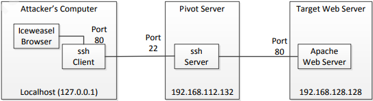

Make services on the remote network accessible to your host via a local listener.
Remember that you need to be root to bind to TCP port <1024. Higher ports are used in the examples below.
Local port forwarding forwards traffic coming to a local port to a specified remote port. For example, all traffic coming to port 1234 on the client could be forwarded to port 23 on the server (host).
Local port forwarding will open a port on the machine you are issuing the command.
Machine 1: ssh <attacker_ip> -L 8080:web_server:80 will listen on port 8080 on Machine 1.
Machine 1 can connect to the webserver by going to 127.0.0.1:8080 which will be forwarded through the ssh connection (through the attacker_ip) to the web_server on port 80
Note: The value of localhost is resolved after the Secure Shell connection has been established -- so when defining local forwarding (outgoing tunnels), localhost refers to the server (remote host computer) you have connected to.
This requires that you have access to the pivot box and ssh is running
SSH local port forwarding is set up with the following command on the attacker’s
system:
# ssh -L 80:192.168.128.128:80 user@192.168.112.132
ssh -g -L 8001:localhost:8000 -f -N user@remote-server.com- This forwards the local port 8001 on your workstation to the localhost address on remote-server.com port 8000.
-g means allow other clients on my network to connect to port 8001 on my workstation. Otherwise only local clients on your workstation can connect to the forwarded port.
-N means all I am doing is forwarding ports, don't start a shell.
-f means fork into background after a successful SSH connection and log-in.
The syntax of the command is
ssh –L port:destination_host:destination_port username@pivot_host
where port is the local port that listens
destination_host is the target host IP or hostname,
destination_port is the port listening on the target host,
username is the user name on the pivot host,
pivot_host is the IP address or hostname of the server being used as the pivot point

Using SSH local port forwarding assumes that SSH server is running on the
compromised host that will be used for pivoting. If it is not installed or running, then
activating it depends upon the conditions established in Rules of Engagement for the
penetration test.
If you jump over multiple hosts, always use the listening IP aswell:
ssh -L <listenip>:<listenport>:<targetip>:<targetport> <user>@<remotehost>
Can also be read like
ssh -g -L <use_this_port_to_connect_to_on_my_localhost>:<ip_of_target_that_has_what_I_want>:<port_that_I_want> remoteuser@pivotbox_machine_that_has_access
WINDOWS Port Forwarding
SSH Portforwading on Windows
bind local port X on remote server Y port Z (reverse tunnel):
plink.exe -R Z:127.0.0.1:X user@Y